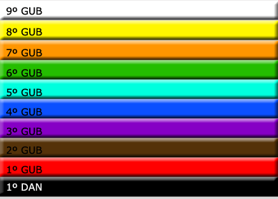
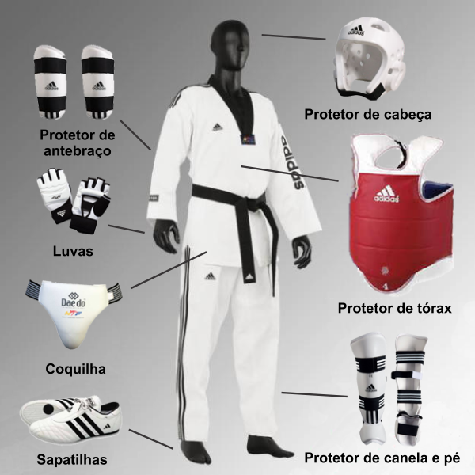

Taekwondo, Arte Milenar e Esporte Olímpico
Como breve resumo, o Taekwondo, Tae Kwon Do ou Taekwon-Do é uma milenar arte marcial coreana, de ataque e defesa, que surgiu há cerca de dois mil anos. Hoje em dia, é um esporte difundido em todos os continentes. Nos Jogos Olímpicos de Seul, em 1988, teve seu "batismo de fogo", quando se converteu num esporte olímpico de exibição. Em Atlanta, 1996, já constava para a disputa de medalhas,
consagrando-se como esporte olímpico oficial nas Olimpíadas de Sydney, em 2000.
TAE (te) significa um sistema de técnicas de pernas; KWON (quon) significa um conjunto de técnicas de mãos; DO (do) é a arte em si, o caminho ou o método.
Literalmente TAEKWONDO significa caminho através dos pés e das mãos.
Faixas do Taekwondo (Atuais)

Equipamentos
